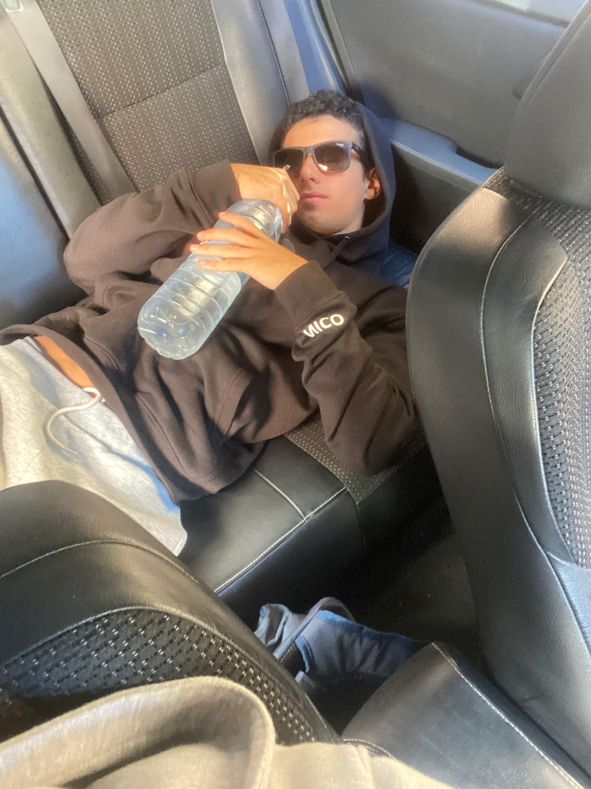
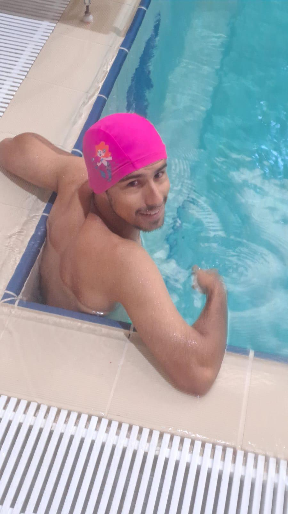
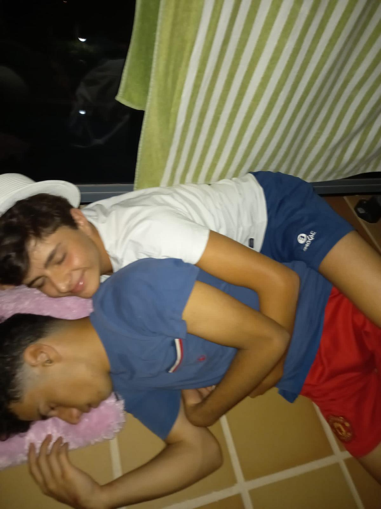
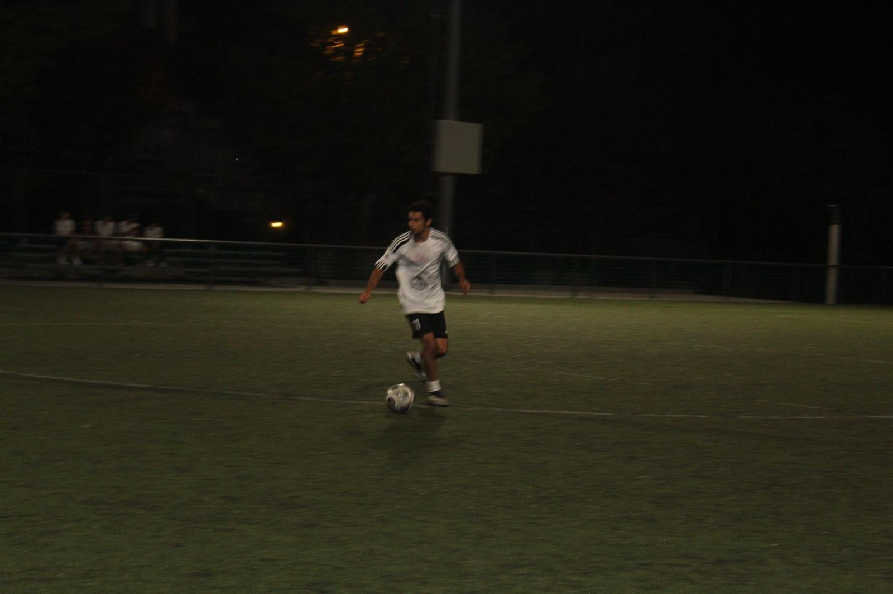
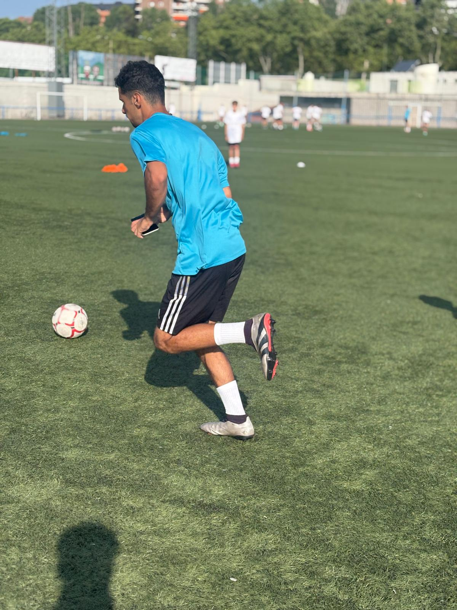

Nico
Delantero | Dorsal 11
Nico es, sin duda, el corazón del área y el protagonista de todos los suspiros en la grada. Con una
capacidad innata para desmarcarse y estar siempre donde nace la jugada, el 11 del Skynna FC posee
ese instinto magnético que atrae el balón en las situaciones más inverosímiles.
Su juego no se mide solo en goles, sino en la incansable perseverancia con la que desafía a la
estadística. Aunque la red se le resista más de lo que dictaría la lógica, su entrega absoluta y su
liderazgo lo convierten en un referente: Nico no solo busca el gol, sino que agota a las defensas
rivales a base de fe y kilómetros.
Galería




